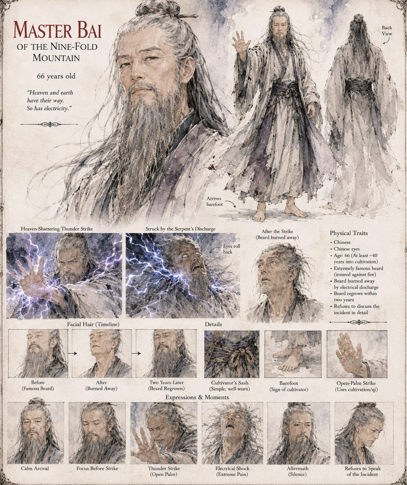

Master Bai
Master of the Nine-Fold Mountain · cultivator · 66 years old
A cultivator of considerable and largely self-reported fame, who has spent forty years meditating beneath a waterfall in pursuit of the True Yang Breath and has grown, in that time, entirely convinced that no divine phenomenon can occur within his own generation without his personal involvement. When word of the Heavenly Thunder-Serpent reaches the Jianghu, he arrives barefoot at the court, addresses the tank in the ringing register cultivators reserve for audiences of one, and strikes the water with an open palm — the Heaven-Shattering Thunder Strike, qi against a fish.
The eel answers with everything it has. His eyes roll back with an audible click several witnesses swear they heard from the second row; his beard, famous throughout three provinces and insured, by one account, against fire, vanishes in a bright, ozone-scented flash; and he folds to the marble. The court draws the wrong lesson entirely: the Yongkang Emperor will remember the singed beard as evidence rather than warning. Master Bai regrows the beard within two years and refuses to discuss the incident.
“Heaven and earth have their way. So has electricity.”
Appears in The Heavenly Thunder-Serpent